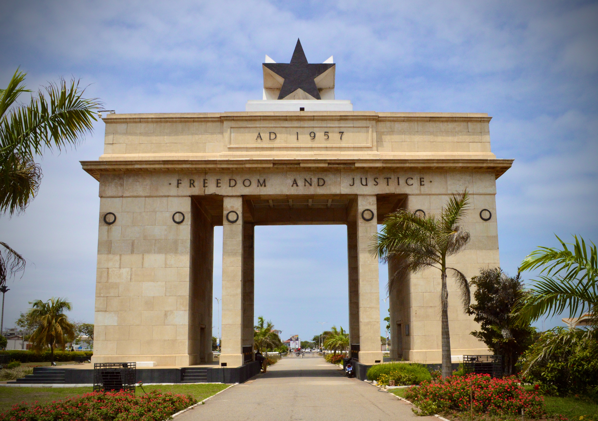
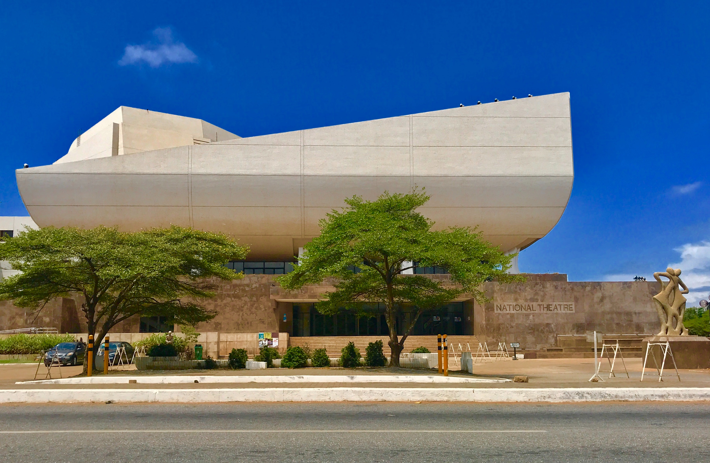

EXPLORA: VISIT GHANA
The Republic of Ghana

Located in the center of West Africa, Ghana is widely known as the first African country to gain independence. Previously known as the Gold Coast due its rich gold mines, Ghana has bean the paragon of African culture and has fostered good relations across its borders with neighbouring countries.
Iconic Sites

Independence Square
Kakum National Park

Kwame Nkrumah Memorial Park
Volta Lake

National Theatre
Elmina Castle
Come and see a wonderful, vibrant, and lively country with beautiful and amazing citizens!!!
One thing is guaranteed: you will never be bored! There is always something to do, some place to visit, somebody to liven up your day. You will never forget this experience once you visit.